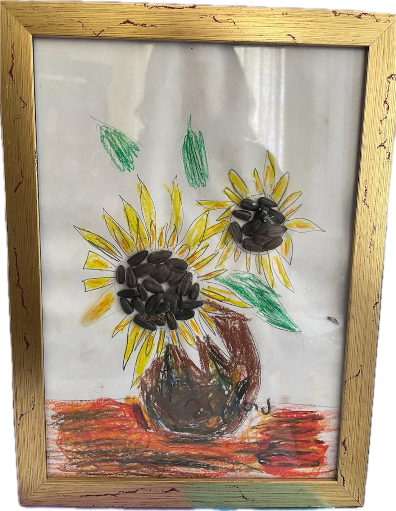

girl with a balloon
This space is born from love, devotion, and an eternal bond. It is dedicated to my sweet, blissful, strong-minded, and deeply artistic daughter, Martha — eternally in our hearts, eternally unattainable, eternally 8 years old. She left behind a world of inspiration which lives on in every piece I create.


Her sense of color, shape, and beauty ran deep. Her drawings, her crafts, her playful eye – all were inimitable. Yet, with her spirit in mind, I dare and try.
This space isn’t about perfection, persicion. It’s about imagination, comunication, expression of joy and simple forms that radiate warmth, color and comfort. It’s a little handmade world, simple and sincere, that speaks to anyone who still carries that childlike sense of wonder.
Every piece in mARTa is crafted with care, heart, and a spark of childhood magic. From Christmas trees in every shape and form, to vibrant flowers, to playful abstractions — these creations are lively, heartfelt, and full of emotions.

My hope is to create decorations that evoke new sensations, yet take you back — to joy, to memories, to that carefree feeling. I hope what you find here can enlighten and enrich your eyesight, bring warmth to your heart and rekindle memories.